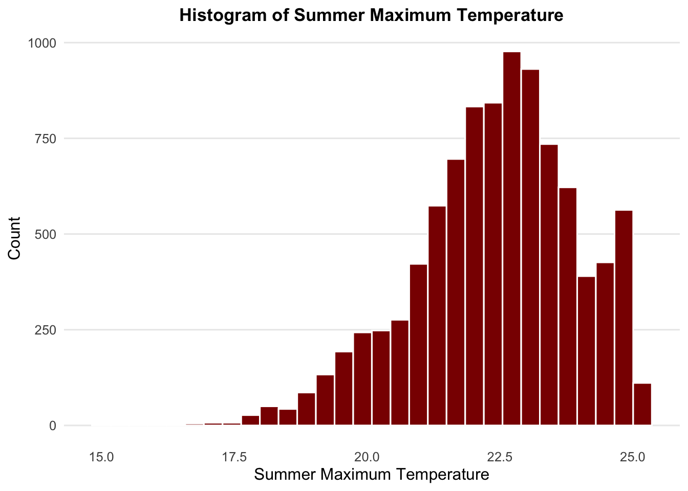
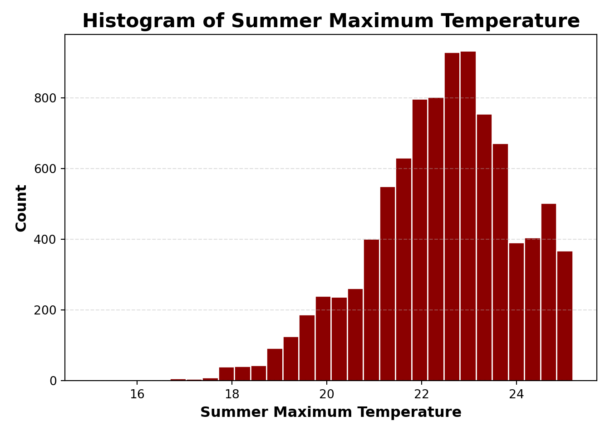
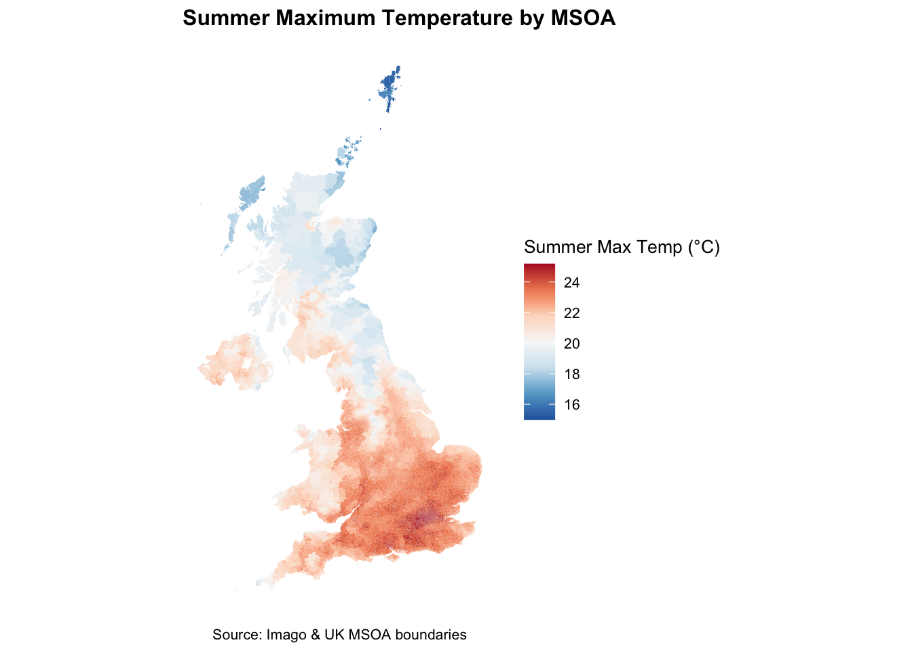
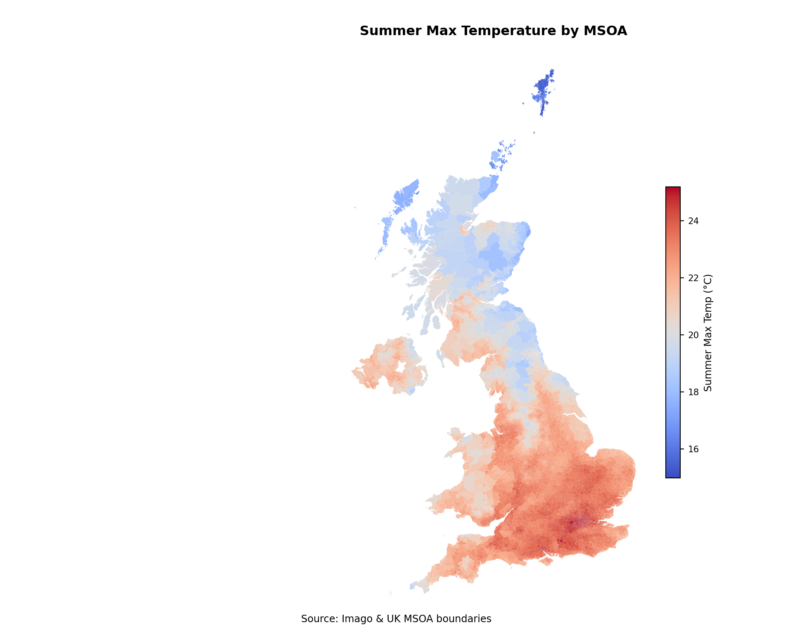
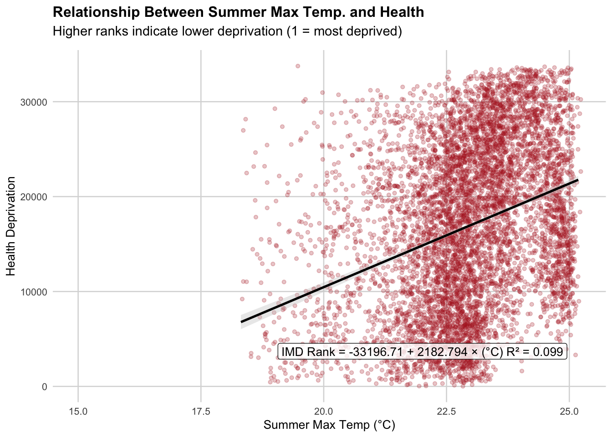
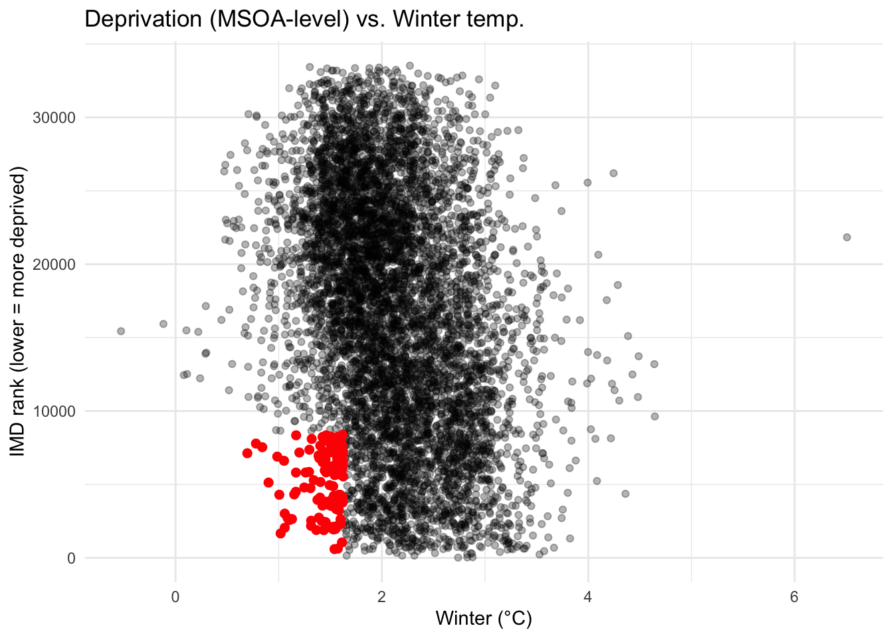
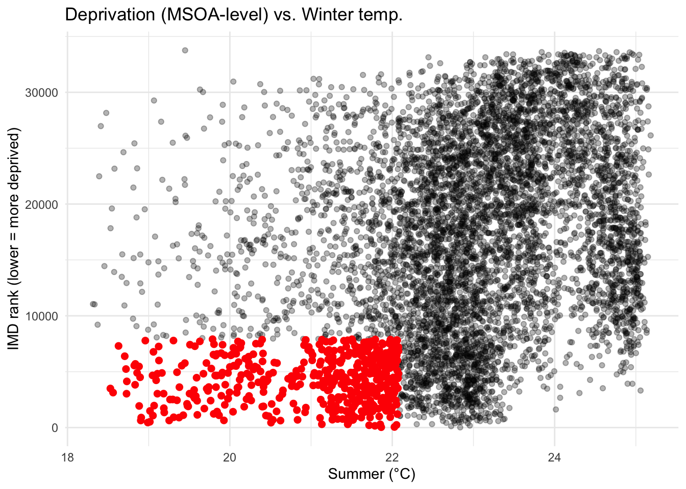
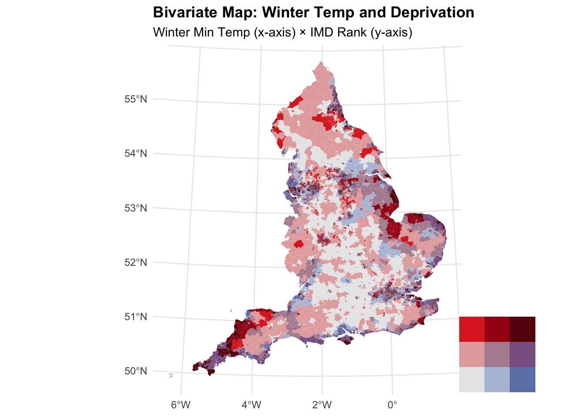
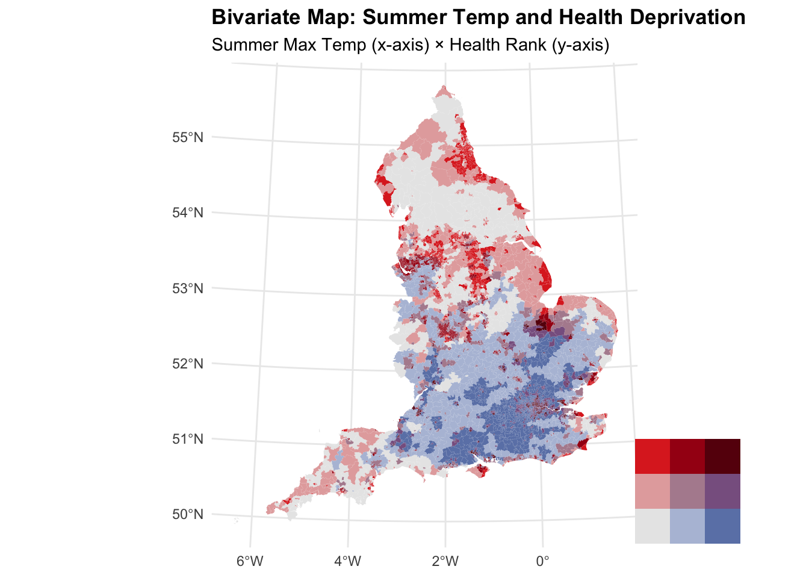
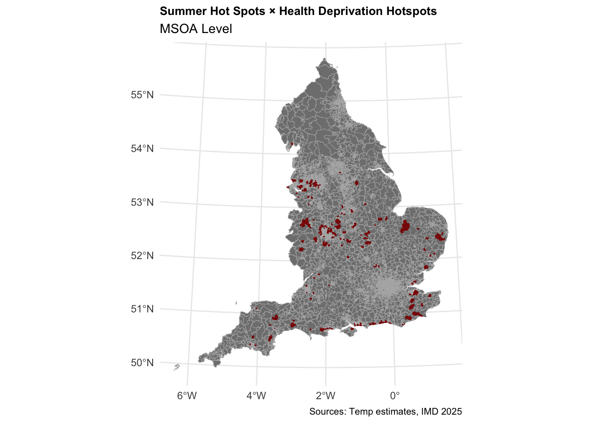

# Core data handling and plotting
library(tidyverse) # Data manipulation + ggplot2
library(dplyr) # (Loaded with tidyverse, listed here for clarity)
library(readr) # Fast reading of CSVs
library(readxl) # Reading Excel files
# Spatial data and mapping
library(sf) # Simple Features: work with spatial data
library(tmap) # Thematic mapping
library(geojsonsf) # Convert between GeoJSON and sf objects
library(osmdata) # Access OpenStreetMap data
library(basemapR) # Static basemaps for mapping
# Plot styling and layout
library(viridis) # Colorblind-friendly palettes
library(cowplot) # Combining and arranging plots
# File system utilities
library(fs) # File and directory helpersExplore datasets with R/Python
Goal: Explore Imago datasets programmatically and replicate analyses across products.
Training Approach: The instructor will first demonstrate the workflow using one example dataset. Participants will then repeat the steps with alternative dataset combinations to practice transferring the workflow across products.
We’ll start the demo with Summer Maximum Temperature and Health Deprivation 2025.
Once you are comfortable with the workflow, feel free to try it out on other datasets—for example, other temperature indicators, flood risk, the sun probability framework or particular IMD domains—to explore different kinds of questions.
Installing packages
We will start by loading core packages for working with spatial data. See detailed description of R and Python
# Standard library
import os # File paths, environment
import tempfile # Temporary files
import zipfile # Extracting ZIP archives
# Data & geospatial
import numpy as np
import pandas as pd
import geopandas as gpd
# Plotting
import matplotlib.pyplot as plt
from matplotlib.patches import Patch
from mpl_toolkits.axes_grid1.inset_locator import inset_axes
from matplotlib import cm
import seaborn as sns
# Statistics
import statsmodels.api as sm
from scipy import stats
from scipy.stats import pearsonr
# Networking
import requestsMSOA boundaries and temperature data product
Input data
MSOA boundary data can be downloaded from the Imago data catalogue
msoa_uk <- read_sf("./data/UK_MSOA_IZB_SDZ.gpkg")msoa_uk = gpd.read_file("./data/UK_MSOA_IZB_SDZ.gpkg")Load MSOA boundary data and Imago product, also from the Imago data catalogue
temp <- read.csv("./data/temperature_indicators_MSOA_2023.csv")temp = pd.read_csv("./data/temperature_indicators_MSOA_2023.csv")Merge
Merge and then plot variable Summer Maximum Temperature.
msoa_temp <- msoa_uk %>%
left_join(temp, by = c("data_zone_code" = "data_zone_code"))msoa_temp = msoa_uk.merge(temp, on="data_zone_code", how="left")Basic summary statistics
Let’s start with summary statistics.
summary(temp$summer_max_tmp) Min. 1st Qu. Median Mean 3rd Qu. Max.
15.00 21.52 22.56 22.42 23.47 25.18 temp["summer_max_tmp"].describe()count 9448.000000
mean 22.416064
std 1.529190
min 14.995362
25% 21.516840
50% 22.557136
75% 23.472169
max 25.182354
Name: summer_max_tmp, dtype: float64Useful for understanding tail behaviour and skewness.
quantile(msoa_temp$summer_max_tmp, probs = seq(0, 1, 0.1), na.rm = TRUE) 0% 10% 20% 30% 40% 50% 60% 70%
14.99536 20.26576 21.22666 21.76118 22.16421 22.55714 22.89843 23.25737
80% 90% 100%
23.70712 24.43829 25.18235 quantiles = msoa_temp["summer_max_tmp"].quantile(np.arange(0, 1.1, 0.1))
quantiles0.0 14.995362
0.1 20.265763
0.2 21.226659
0.3 21.761176
0.4 22.164207
0.5 22.557136
0.6 22.898428
0.7 23.257367
0.8 23.707120
0.9 24.438293
1.0 25.182354
Name: summer_max_tmp, dtype: float64Exploring the Distribution of Summer Maximum Temperature
A histogram is a useful way to examine the shape of the distribution, including skewness and the presence of extreme values.
ggplot(msoa_temp, aes(x = summer_max_tmp)) +
geom_histogram(bins = 30, color = "white", fill = "darkred") +
labs(
title = "Histogram of Summer Maximum Temperature",
x = "Summer Maximum Temperature",
y = "Count"
) +
theme_minimal(base_size = 12) +
theme(
plot.title = element_text(face = "bold", size = 13, hjust = 0.5),
panel.grid.minor = element_blank(),
panel.grid.major.x = element_blank()
)
fig, ax = plt.subplots()
ax.hist(
msoa_temp["summer_max_tmp"],
bins=30,
edgecolor="white",
color="darkred"
)
# Labels and title
ax.set_title("Histogram of Summer Maximum Temperature", fontsize=16, fontweight="bold", loc="center")
ax.set_xlabel("Summer Maximum Temperature", fontsize=12, fontweight="bold")
ax.set_ylabel("Count", fontsize=12, fontweight="bold")
# Minimal-style adjustments
ax.grid(axis="y", linestyle="--", alpha=0.4)
ax.grid(axis="x", visible=False)
ax.set_facecolor("white")
fig.set_facecolor("white")
plt.tight_layout()
plt.show()
Mapping by local area
Mapping temperature across MSOAs allows us to see spatial variation and identify hotter areas during summer. Here, we visualise summer maximum temperatures in degrees Celsius.
Here we visualise summer maximum temperature with ggplot.
ggplot(msoa_temp) +
geom_sf(aes(fill = summer_max_tmp), colour = NA) +
scale_fill_distiller(
palette = "RdBu",
name = "Summer Max Temp (°C)",
direction = -1,
breaks = scales::pretty_breaks(6)
) +
labs(
title = "Summer Maximum Temperature by MSOA",
caption = "Source: Imago & UK MSOA boundaries"
) +
theme_minimal(base_size = 10) +
theme(
plot.title = element_text(face = "bold"),
plot.subtitle = element_text(size = 10, colour = "#555555"),
legend.position = "right",
panel.grid.major = element_blank(),
panel.grid.minor = element_blank(),
axis.title = element_blank(),
axis.text = element_blank(),
axis.ticks = element_blank(),
plot.caption = element_text(hjust = 0.5)
)
# Create figure and axis
fig, ax = plt.subplots(figsize=(10, 8))
# Colormap
viridis = plt.get_cmap('coolwarm')
# Plot MSOA polygons coloured by summer maximum temperature
msoa_temp.plot(
column="summer_max_tmp",
cmap=viridis,
linewidth=0,
legend=True,
legend_kwds={
"shrink": 0.5, # shrink colorbar
"aspect": 20, # controls thickness
"pad": 0.02, # spacing from plot
"label": "Summer Max Temp (°C)",
},
ax=ax
)
# Title and labels
ax.set_title(
"Summer Max Temperature by MSOA",
fontsize=12,
fontweight="bold"
)
ax.set_axis_off()
# Make legend text smaller after creation
cb = ax.get_figure().axes[-1] # colorbar axis is always last
cb.tick_params(labelsize=8) # smaller tick labels
cb.set_ylabel("Summer Max Temp (°C)", fontsize=9)
plt.figtext(
0.5, 0.02,
"Source: Imago & UK MSOA boundaries",
ha="center",
fontsize=9
)
plt.tight_layout()
plt.show()
Merge with the Index of Multiple Deprivation
The English Indices of Deprivation 2025 were recently published.
# Temp file location
tmp_file <- tempfile(fileext = ".xlsx")
# Download IMD 2025 file
download.file(
url = "https://assets.publishing.service.gov.uk/media/691decfae39a085bda43efcd/File_2_IoD2025_Domains_of_Deprivation.xlsx",
destfile = tmp_file,
mode = "wb"
)
# Import IMD25 sheet
imd <- read_excel(tmp_file, sheet = "IoD2025 Domains")
# Delete the temporary file
unlink(tmp_file)
# Inspect column names to identify the join key
names(imd) [1] "LSOA code (2021)"
[2] "LSOA name (2021)"
[3] "Local Authority District code (2024)"
[4] "Local Authority District name (2024)"
[5] "Index of Multiple Deprivation (IMD) Rank (where 1 is most deprived)"
[6] "Index of Multiple Deprivation (IMD) Decile (where 1 is most deprived 10% of LSOAs)"
[7] "Income Rank (where 1 is most deprived)"
[8] "Income Decile (where 1 is most deprived 10% of LSOAs)"
[9] "Employment Rank (where 1 is most deprived)"
[10] "Employment Decile (where 1 is most deprived 10% of LSOAs)"
[11] "Education, Skills and Training Rank (where 1 is most deprived)"
[12] "Education, Skills and Training Decile (where 1 is most deprived 10% of LSOAs)"
[13] "Health Deprivation and Disability Rank (where 1 is most deprived)"
[14] "Health Deprivation and Disability Decile (where 1 is most deprived 10% of LSOAs)"
[15] "Crime Rank (where 1 is most deprived)"
[16] "Crime Decile (where 1 is most deprived 10% of LSOAs)"
[17] "Barriers to Housing and Services Rank (where 1 is most deprived)"
[18] "Barriers to Housing and Services Decile (where 1 is most deprived 10% of LSOAs)"
[19] "Living Environment Rank (where 1 is most deprived)"
[20] "Living Environment Decile (where 1 is most deprived 10% of LSOAs)" # Create a temporary file with .xlsx extension
tmp_file = tempfile.NamedTemporaryFile(delete=False, suffix=".xlsx").name
# Download
url = "https://assets.publishing.service.gov.uk/media/691decfae39a085bda43efcd/File_2_IoD2025_Domains_of_Deprivation.xlsx"
r = requests.get(url)
with open(tmp_file, "wb") as f:
f.write(r.content)4337372# Read Excel sheet & Clean up temp file
imd = pd.read_excel(tmp_file, sheet_name="IoD2025 Domains")
os.remove(tmp_file)
# Now imd exists
print(imd.columns.tolist())['LSOA code (2021)', 'LSOA name (2021)', 'Local Authority District code (2024)', 'Local Authority District name (2024)', 'Index of Multiple Deprivation (IMD) Rank (where 1 is most deprived)', 'Index of Multiple Deprivation (IMD) Decile (where 1 is most deprived 10% of LSOAs)', 'Income Rank (where 1 is most deprived)', 'Income Decile (where 1 is most deprived 10% of LSOAs)', 'Employment Rank (where 1 is most deprived)', 'Employment Decile (where 1 is most deprived 10% of LSOAs)', 'Education, Skills and Training Rank (where 1 is most deprived)', 'Education, Skills and Training Decile (where 1 is most deprived 10% of LSOAs)', 'Health Deprivation and Disability Rank (where 1 is most deprived)', 'Health Deprivation and Disability Decile (where 1 is most deprived 10% of LSOAs)', 'Crime Rank (where 1 is most deprived)', 'Crime Decile (where 1 is most deprived 10% of LSOAs)', 'Barriers to Housing and Services Rank (where 1 is most deprived)', 'Barriers to Housing and Services Decile (where 1 is most deprived 10% of LSOAs)', 'Living Environment Rank (where 1 is most deprived)', 'Living Environment Decile (where 1 is most deprived 10% of LSOAs)']Aggregate up to MSOA
To combine temperature data (held at MSOA level) with deprivation data (held at LSOA level), we use the Postcode → OA (2021) → LSOA → MSOA → Local Authority District (LAD) best-fit lookup published by the Office for National Statistics (ONS):
ONS Postcode to OA (2021) to LSOA to MSOA to LAD (May 2025) Best-Fit Lookup for the UK
This provides consistent, authoritative geographic relationships between postcode units and statistical areas. It enables us to link LSOA-level IMD data to MSOA-level heat estimates and then calculate MSOA-level average deprivation scores.
# Create temporary file paths
zip_file <- tempfile(fileext = ".zip")
unzipped_dir <- tempfile()
# Ensure temp files are deleted at the end
on.exit({
unlink(zip_file)
unlink(unzipped_dir, recursive = TRUE)
}, add = TRUE)
# Download ZIP
download.file(
url = "https://www.arcgis.com/sharing/rest/content/items/7fc55d71a09d4dcfa1fd6473138aacc3/data",
destfile = zip_file,
mode = "wb"
)
# Unzip
unzip(zip_file, exdir = unzipped_dir)
# Delete the ZIP immediately after extraction
unlink(zip_file)
# Identify and load the lookup CSV
lookup_path <- list.files(
unzipped_dir,
pattern = "\\.csv$",
recursive = TRUE,
full.names = TRUE
)
LSOA21_MSOA21 <- read_csv(lookup_path)
# Keep only necessary columns
LSOA21_MSOA21 <- LSOA21_MSOA21 %>%
select(lsoa21cd, msoa21cd, ladcd, lsoa21nm, msoa21nm, ladnm) %>%
distinct(lsoa21cd, .keep_all = TRUE) # drop duplicates by LSOA
# Join to IMD
lsoa_msoa_imd <- LSOA21_MSOA21 %>%
left_join(imd, by = c("lsoa21cd" = "LSOA code (2021)"))# Create temporary paths
zip_file = tempfile.NamedTemporaryFile(delete=False, suffix=".zip").name
unzipped_dir = tempfile.mkdtemp()
# Download ZIP
url = "https://www.arcgis.com/sharing/rest/content/items/7fc55d71a09d4dcfa1fd6473138aacc3/data"
r = requests.get(url)
with open(zip_file, "wb") as f:
f.write(r.content)23427792
# Unzip
with zipfile.ZipFile(zip_file, "r") as z:
z.extractall(unzipped_dir)
# Delete ZIP immediately
os.remove(zip_file)
# Locate lookup CSV
lookup_path = None
for root, dirs, files in os.walk(unzipped_dir):
for file in files:
if file.lower().endswith(".csv"):
lookup_path = os.path.join(root, file)
break
if lookup_path:
break
if lookup_path is None:
raise FileNotFoundError("No CSV found in the downloaded ZIP.")
# Load lookup table
LSOA21_MSOA21 = pd.read_csv(lookup_path)
# Keep only necessary columns
LSOA21_MSOA21 = LSOA21_MSOA21[
["lsoa21cd", "msoa21cd", "ladcd", "lsoa21nm", "msoa21nm", "ladnm"]
].drop_duplicates(subset="lsoa21cd")
# Join to IMD
lsoa_msoa_imd = LSOA21_MSOA21.merge(
imd,
how="left",
left_on="lsoa21cd",
right_on="LSOA code (2021)"
)Join IMD
Keep only the relevant columns from the LSOA lookup & IMD dataset. Rename the long IMD column names to shorter, convenient names: health_rank and health_decile.
lsoa_msoa_imd_clean <- lsoa_msoa_imd %>%
select(
lsoa21cd,
msoa21cd,
ladcd,
lsoa21nm,
msoa21nm,
ladnm,
`Health Deprivation and Disability Rank (where 1 is most deprived)`,
`Health Deprivation and Disability Decile (where 1 is most deprived 10% of LSOAs)`
) %>%
rename(
health_rank = `Health Deprivation and Disability Rank (where 1 is most deprived)`,
health_decile = `Health Deprivation and Disability Decile (where 1 is most deprived 10% of LSOAs)`
)# Select the required columns
lsoa_msoa_imd_clean = lsoa_msoa_imd[
[
"lsoa21cd",
"msoa21cd",
"ladcd",
"lsoa21nm",
"msoa21nm",
"ladnm",
"Health Deprivation and Disability Rank (where 1 is most deprived)",
"Health Deprivation and Disability Decile (where 1 is most deprived 10% of LSOAs)"
]
].rename(
columns={
"Health Deprivation and Disability Rank (where 1 is most deprived)": "health_rank",
"Health Deprivation and Disability Decile (where 1 is most deprived 10% of LSOAs)": "health_decile"
}
)As IMD is only for England, check number of MSOAs that are covered.
# Compute the percentage of non-missing IMD ranks
mean(!is.na(lsoa_msoa_imd_clean$health_rank)) * 100[1] 76.8609# Compute the percentage of non-missing IMD ranks
pct_non_missing = lsoa_msoa_imd_clean['health_rank'].notna().mean() * 100
print(pct_non_missing)76.86089669148622Aggregate IMD to MSOA
Here we compute the mean IMD rank for each MSOA by averaging across all LSOAs within that MSOA. The result is a dataset at MSOA level for deprivation.
msoa_imd_agg <- lsoa_msoa_imd_clean %>%
group_by(msoa21cd, msoa21nm, ladcd, ladnm) %>%
summarise(
health_rank_msoa = mean(health_rank, na.rm = TRUE)
) %>%
ungroup()msoa_imd_agg = (
lsoa_msoa_imd_clean
.groupby(["msoa21cd", "msoa21nm", "ladcd", "ladnm"], as_index=False)
.agg(health_rank_msoa=("health_rank", "mean")) # mean ignores NaN by default
)Trim whitespace and ensure both datasets use character format for MSOA codes to avoid mismatches during the join.
msoa_imd_agg <- msoa_imd_agg %>%
mutate(msoa21cd = trimws(as.character(msoa21cd)))
msoa_temp <- msoa_temp %>%
mutate(msoa21cd = trimws(as.character(MSOA21C)))# Strip whitespace and ensure string type for MSOA codes
msoa_imd_agg['msoa21cd'] = msoa_imd_agg['msoa21cd'].astype(str).str.strip()
msoa_temp['msoa21cd'] = msoa_temp['MSOA21C'].astype(str).str.strip()Join the aggregated IMD data with the MSOA-level heat dataset by MSOA code. The final dataset contains:
- MSOA identifiers and names
- LAD identifiers and names
Summer Maximum Temperature- Aggregated
Health rank
msoa_final <- msoa_imd_agg %>%
left_join(msoa_temp %>% select(msoa21cd, summer_max_tmp), by = "msoa21cd")temp_cols = ["msoa21cd", "summer_max_tmp"]
# Left join on 'msoa21cd'
msoa_final = msoa_imd_agg.merge(
msoa_temp[temp_cols],
how="left",
on="msoa21cd"
)Create a scatterplot: exposure to heat vs. deprivation decile
Next, we explore the relationship between summer maximum temperature and health deprivation. We can visualize this using a scatterplot and then quantify it with a simple linear regression model, where the health rank is the outcome and summer maximum temperature is the predictor.
Note
In reality, multiple factors influence deprivation, so this is a simplified illustration. Additional variables would likely play a role in a more complete analysis.
If we want to examine the specific relationship between hot temperature and health deprivation in a causal way, we would also need to account for confounding factors that could influence both temperature exposure and health These might include:
• Socioeconomic and demographic factors: income, employment, education levels, age distribution, and ethnicity.
• Housing characteristics: building quality, insulation, heating systems, tenure (owned vs rented), and urban density.
• Environmental features: altitude, proximity to water, green space, and urban heat island effects.
• Health and vulnerability indicators: prevalence of chronic illnesses, respiratory conditions, or other factors affecting resilience to cold.
• Infrastructure and access: availability of public transport, energy affordability, and access to healthcare or social services.
The code below:
- Fits the model,
- Extracts the regression equation and R² value, and
- Visualise the relationship using a scatterplot with a fitted trend line and an annotated equation.
model <- lm(health_rank_msoa ~ summer_max_tmp, data = msoa_final)
eq <- paste0(
"IMD Rank = ", round(coef(model)[1], 2),
" + ", round(coef(model)[2], 3), " × (°C)",
" R² = ", round(summary(model)$r.squared, 3)
)
ggplot(msoa_final, aes(x = summer_max_tmp, y = health_rank_msoa)) +
geom_jitter(alpha = 0.25, width = 0.1, size = 1.2, colour = "firebrick") +
geom_smooth(
method = "lm",
se = TRUE,
colour = "black",
linewidth = 0.9,
fill = "grey80"
) +
annotate(
"label",
x = quantile(msoa_final$summer_max_tmp, 0.98, na.rm = TRUE),
y = quantile(msoa_final$health_rank_msoa, 0.05, na.rm = TRUE),
label = eq,
hjust = 1,
vjust = 0,
size = 3.5,
label.size = 0.2,
fill = "white",
alpha = 0.8
) +
scale_x_continuous(limits = c(18, NA)) + # ← start x-axis at 18°C
expand_limits(
y = range(msoa_final$health_rank_msoa, na.rm = TRUE)
) +
labs(
title = "Relationship Between Summer Max Temp. and Health",
subtitle = "Higher ranks indicate lower deprivation (1 = most deprived)",
x = "Summer Max Temp (°C)",
y = "Health Deprivation"
) +
theme_minimal(base_size = 10) +
theme(
plot.title = element_text(face = "bold", size = 12),
plot.subtitle = element_text(size = 11, margin = margin(b = 10)),
panel.grid.minor = element_blank(),
panel.grid.major = element_line(colour = "grey85")
) +
labs(
title = "Relationship Between Summer Max Temp. and Health",
subtitle = "Higher ranks indicate lower deprivation (1 = most deprived)",
x = "Summer Max Temp (°C)",
y = "Health Deprivation"
) +
theme_minimal(base_size = 10) +
theme(
plot.title = element_text(face = "bold", size = 12),
plot.subtitle = element_text(size = 11, margin = margin(b = 10)),
panel.grid.minor = element_blank(),
panel.grid.major = element_line(colour = "grey85")
) +
labs(
title = "Relationship Between Summer Max Temp. and Health",
subtitle = "Higher ranks indicate lower deprivation (1 = most deprived)",
x = "Summer Max Temp (°C)",
y = "Health Deprivation"
) +
theme_minimal(base_size = 10) +
theme(
plot.title = element_text(face = "bold", size = 12),
plot.subtitle = element_text(size = 11, margin = margin(b = 10)),
panel.grid.minor = element_blank(),
panel.grid.major = element_line(colour = "grey85")
)
fig, ax = plt.subplots(figsize=(10, 8), facecolor='#4a4a49')
ax.set_facecolor('#4a4a49')
# Extract columns FIRST
x = msoa_final["summer_max_tmp"]
y = msoa_final["health_rank_msoa"]
# Create mask and filter
mask = ~(x.isna() | y.isna())
x = x[mask]
y = y[mask]
# Scatter
ax.scatter(x, y, alpha=0.4, s=10, color='#EE4B2B', edgecolor='none')
# Regression line
slope, intercept, r_value, p_value, std_err = stats.linregress(x, y)
x_line = np.linspace(x.min(), x.max(), 100)
y_line = slope * x_line + intercept
ax.plot(x_line, y_line, color='white', linewidth=2, label=f'y = {slope:.2f}x + {intercept:.2f}, R² = {r_value**2:.3f}')
# Legend
ax.legend(facecolor='#4a4a49', edgecolor='white', labelcolor='white', fontsize=12)
# Style
ax.set_xlabel('Summer Max Temp (°C)', color='white', fontsize=12)
ax.set_ylabel('Health Rank', color='white', fontsize=12)
ax.set_title('Health Rank vs. Summer Max Temperature', color='white', fontsize=14)
ax.tick_params(colors='white', labelsize=12)
ax.grid(True, color='white', alpha=0.3, linestyle='-', linewidth=0.5)
for spine in ax.spines.values():
spine.set_color('white')
plt.tight_layout()
plt.show()
Calculate correlations and simple inequality metrics
Pearson correlation
# Basic Pearson correlation
cor_test <- cor.test(msoa_final$summer_max_tmp, msoa_final$health_rank_msoa)
cor_test
Pearson's product-moment correlation
data: msoa_final$summer_max_tmp and msoa_final$health_rank_msoa
t = 28.435, df = 6854, p-value < 2.2e-16
alternative hypothesis: true correlation is not equal to 0
95 percent confidence interval:
0.3034996 0.3458496
sample estimates:
cor
0.3248374 # Drop missing values for the two columns
x = msoa_final['summer_max_tmp']
y = msoa_final['health_rank_msoa']
mask = x.notna() & y.notna()
# Compute Pearson correlation
corr_coef, p_value = pearsonr(x[mask], y[mask])
print(f"Pearson correlation: {corr_coef:.3f}")Pearson correlation: 0.325print(f"P-value: {p_value:.3g}")P-value: 4.86e-168Exploring IMD rank quintiles
First, we remove MSOAs with missing health rank or summer maximum temperature values to avoid NA values flowing through the analysis. The quintiles are created (1 = most deprived MSOAs, 5 = least deprived).
msoa_final_clean <- msoa_final %>%
drop_na(health_rank_msoa, summer_max_tmp) %>% # ensure complete cases
mutate(
# Divide MSOAs into 5 equal-sized groups based on deprivation rank
# ntile() assigns 1 = most deprived, 5 = least deprived
health_quintile = ntile(health_rank_msoa, 5)
)
msoa_final_clean <- st_as_sf(msoa_final_clean)# Drop rows with missing values
msoa_final_clean = msoa_final.dropna(subset=["health_rank_msoa", "summer_max_tmp"]).copy()
# Create quintiles (1 = most deprived, 5 = least deprived)
msoa_final_clean["health_quintile"] = pd.qcut(
msoa_final_clean["health_rank_msoa"],
q=5,
labels=[1, 2, 3, 4, 5]
).astype(int)Identify hottest and most deprived MSOAs
msoa_hotspots <- msoa_final_clean %>%
mutate(
summertemp_decile = ntile(summer_max_tmp, 3), # hottest
health_decile = ntile(-health_rank_msoa, 3) # most deprived
) %>%
filter(summertemp_decile == 3 & health_decile == 3) # hottest + most deprivation
msoa_hotspots <- st_as_sf(msoa_hotspots)
msoa_hotspots = msoa_final_clean.copy()
# Create deciles (5 groups here)
msoa_hotspots["summertemp_decile"] = pd.qcut(
msoa_hotspots["summer_max_tmp"], q=3, labels=False
) + 1 # labels
msoa_hotspots["health_decile"] = pd.qcut(
-msoa_hotspots["health_rank_msoa"], q=3, labels=False
) + 1 # labels
# Filter to the hottest temps & most deprived
msoa_hotspots = msoa_hotspots[
(msoa_hotspots["summertemp_decile"] == 3) &
(msoa_hotspots["health_decile"] == 3)
]Scatter plot with quadrants (best to show inequality trend)
Plot maximum temperature vs. health rank and highlight hotspots. Hotspots appear in the bottom-left quadrant: low temperature (coldest days) + high deprivation.
ggplot(msoa_final_clean, aes(x =summer_max_tmp, y = health_rank_msoa)) +
geom_point(alpha = 0.3) +
geom_point(data = msoa_hotspots, colour = "red", size = 2) +
labs(
title = "Deprivation (MSOA-level) vs. Summer temp.",
x = "Summer (°C)",
y = "IMD rank (lower = more deprived)"
) +
theme_minimal()
plt.figure(figsize=(8, 6))
# All points
plt.scatter(
msoa_final_clean["summer_max_tmp"],
msoa_final_clean["health_rank_msoa"],
color="black",
alpha=0.3
)
# Hotspots (highlighted in red)
plt.scatter(
msoa_hotspots["summer_max_tmp"],
msoa_hotspots["health_rank_msoa"],
color="red",
s=30
)
plt.title("Deprivation (MSOA-level) vs. Summer temp.")
plt.xlabel("Summer (°C)")
plt.ylabel("IMD rank (lower = more deprived)")
plt.tight_layout()
plt.show()
Bivariate choropleth map
Created bivariate categories. Now map them:
- low heat + low health deprivation
- low heat + high health deprivation
- high heat + low health deprivation
- high heat + high health deprivation (hotspots)
Generate a bivariate map
msoa_bi <- msoa_final_clean %>%
mutate(
summer_class = ntile(summer_max_tmp, 3), # 1 = low exposure, 3 = high
health_class = ntile(-health_rank_msoa, 3), # -rank so 1 = least deprived → 3 = most deprived
bi_class = paste0(summer_class, "-", health_class)
) bi_palette <- c(
"1-1" = "#D9EBF5", # low heat, low deprivation (very light blue)
"2-1" = "#E8E0D5", # medium heat, low deprivation (warm beige)
"3-1" = "#F5B895", # high heat, low deprivation (warm orange-peach)
"1-2" = "#ACD4E8", # low heat, medium deprivation (light blue)
"2-2" = "#D5D5D5",
"3-2" = "#E67676",
"1-3" = "#6A9ABD", # low heat, high deprivation (medium-light blue)
"2-3" = "#C99191", # medium heat, high deprivation (lighter rose)
"3-3" = "#C83737" # high heat, high deprivation (dark red)
)p_map <- ggplot(msoa_bi) +
geom_sf(aes(fill = bi_class), colour = NA) +
scale_fill_manual(values = bi_palette) +
labs(
title = "Bivariate Map: Summer Temp and Health Deprivation",
fill = "Bivariate class",
subtitle = "Summer Max Temp (x-axis) × Health Rank (y-axis)"
) +
theme_void() +
theme(
legend.position = "none",
plot.title = element_text(face = "bold")
)# Build legend grid (3x3)
legend_df <- expand_grid(
summer_class = 1:3,
health_class = 1:3
) %>%
mutate(
bi_class = paste0(summer_class, "-", health_class),
fill = bi_palette[bi_class]
)
p_legend <- ggplot(legend_df, aes(x = summer_class, y = health_class, fill = fill)) +
geom_tile() +
scale_fill_identity() +
coord_equal() +
theme_void() +
theme(
panel.border = element_rect(colour = "black", fill = NA),
plot.margin = margin(0, 0, 0, 0)
)final_map <- ggdraw() +
draw_plot(p_map) +
draw_plot(
p_legend,
x = 0.75, y = 0.05, # bottom-right corner
width = 0.2, height = 0.2
)
final_map
# --- Create bivariate classes ---
# Merging back to geospatial data
msoa_final_clean = msoa_final_clean.merge(msoa_uk[["data_zone_code","geometry"]], left_on="msoa21cd", right_on="data_zone_code", how="left")
msoa_bi = msoa_final_clean.copy()
msoa_bi = gpd.GeoDataFrame(msoa_bi, geometry="geometry")
msoa_bi["summer_class"] = pd.qcut(
msoa_bi["summer_max_tmp"],
q=3,
labels=[1, 2, 3] # 1 = low, 3 = high
)
msoa_bi["health_class"] = pd.qcut(
msoa_bi["health_rank_msoa"],
q=3,
labels=[3, 2, 1] # Reversed: 3 = most deprived (low rank)
)
msoa_bi["bi_class"] = (
msoa_bi["summer_class"].astype(str) + "-" + msoa_bi["health_class"].astype(str)
)
# --- Define palette ---
bi_palette = {
"1-1": "#D9EBF5", # low heat, low deprivation
"2-1": "#E8E0D5", # medium heat, low deprivation
"3-1": "#F5B895", # high heat, low deprivation
"1-2": "#ACD4E8", # low heat, medium deprivation
"2-2": "#D5D5D5", # medium heat, medium deprivation
"3-2": "#E67676", # high heat, medium deprivation
"1-3": "#6A9ABD", # low heat, high deprivation
"2-3": "#C99191", # medium heat, high deprivation
"3-3": "#C83737", # high heat, high deprivation
}
# Map colors to data
msoa_bi["color"] = msoa_bi["bi_class"].map(bi_palette)
# --- 3. Create map ---
fig, ax = plt.subplots(figsize=(12, 10))
msoa_bi.plot(
ax=ax,
color=msoa_bi["color"],
edgecolor="none"
)
ax.set_title("Bivariate Map: Summer Temp and Health Deprivation", fontweight="bold", fontsize=14)
ax.set_axis_off()
# --- Create inset legend (3x3 grid) ---
ax_legend = inset_axes(
ax,
width="15%",
height="15%",
loc="lower right",
borderpad=2
)
# Build legend grid
legend_grid = np.zeros((3, 3), dtype=object)
for i, health in enumerate([3, 2, 1]): # y-axis: top = most deprived
for j, summer in enumerate([1, 2, 3]): # x-axis: left = low temp
legend_grid[i, j] = bi_palette[f"{summer}-{health}"]
# Convert to RGB for imshow
from matplotlib.colors import to_rgb
rgb_grid = np.array([[to_rgb(c) for c in row] for row in legend_grid])
ax_legend.imshow(rgb_grid, origin="upper")
ax_legend.set_xticks([0, 1, 2])
ax_legend.set_yticks([0, 1, 2])
ax_legend.set_xticklabels(["Low", "", "High"], fontsize=8)
ax_legend.set_yticklabels(["High", "", "Low"], fontsize=8)
ax_legend.set_xlabel("Summer Temp →", fontsize=8)
ax_legend.set_ylabel("← Deprivation", fontsize=8)
ax_legend.tick_params(length=0)
plt.tight_layout()<string>:2: UserWarning: This figure includes Axes that are not compatible with tight_layout, so results might be incorrect.plt.show()
Highlight hotspots on a map
We can highlight hotspots on top of a greyscale map. Immediately shows where the worst areas are. MSOAs in red are where hottest temperatures overlap with high health deprivation. What does this actually tell us?

Other things
Now it’s your turn to explore one of our other data products! There’s a lot more to investigate here. Some ideas to get you started:
- Urban vs. Rural Differences: Examine how heat and deprivation vary between urban and rural areas given that at first glance there seems to be a clear urban heat island effect.
- Other IMD Measures: explore links between temperature and other aspects of deprivation, such as:
- Education levels
- Housing in poor condition
- Mental health
- Other Imago data:
FloodingorSun Probability Framework.